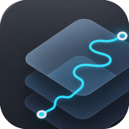
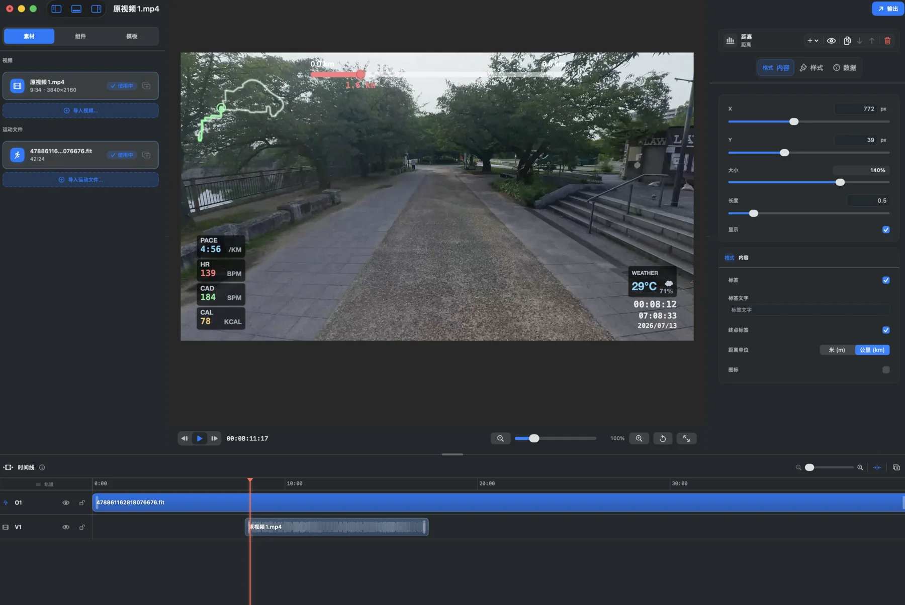
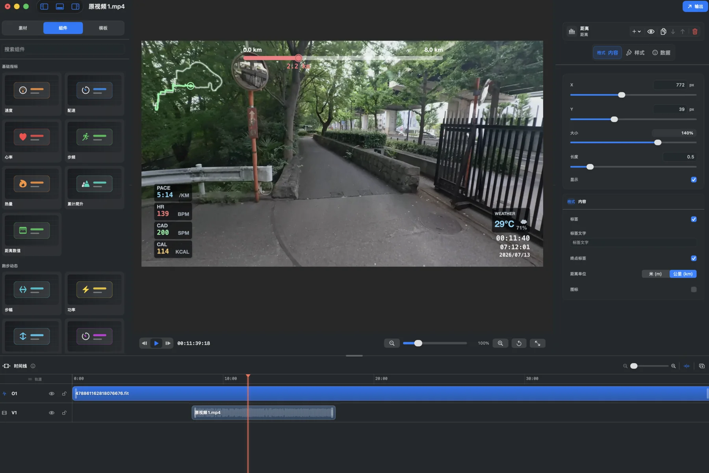
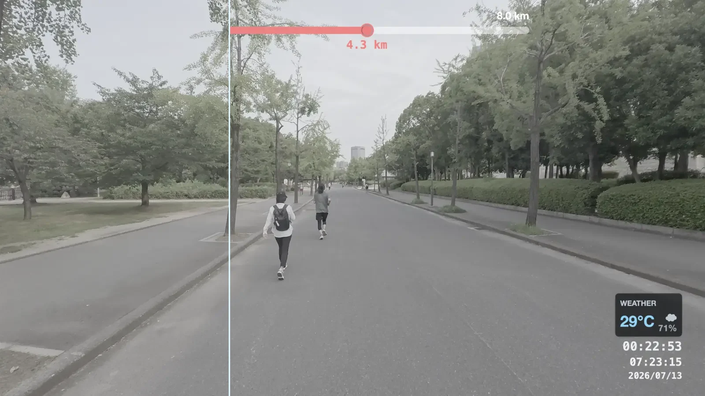
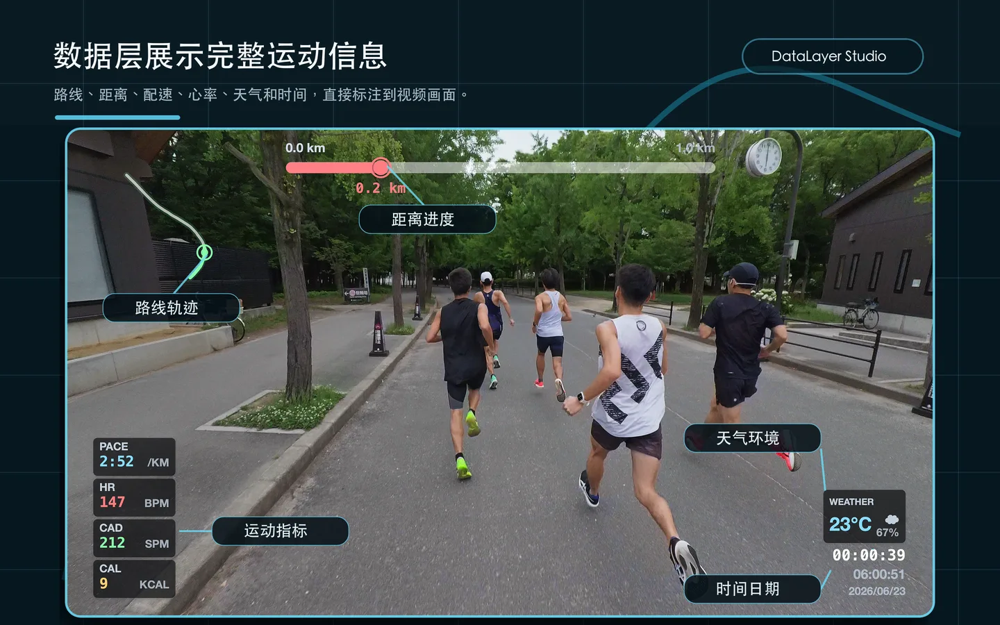
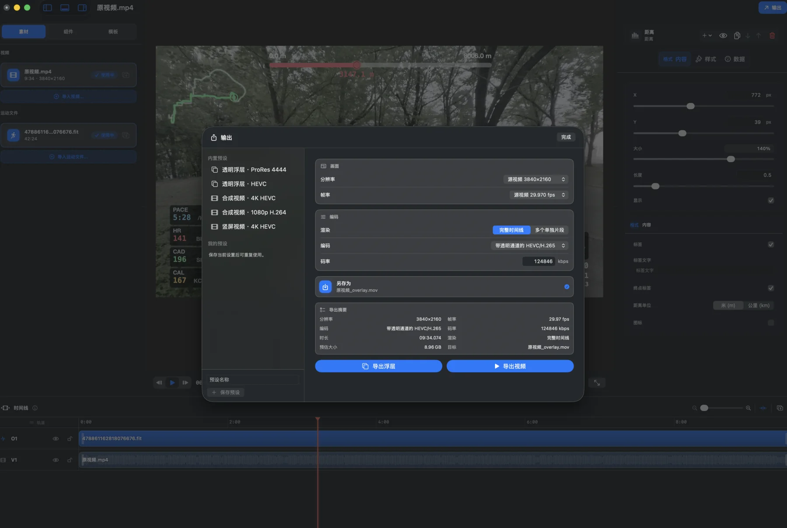
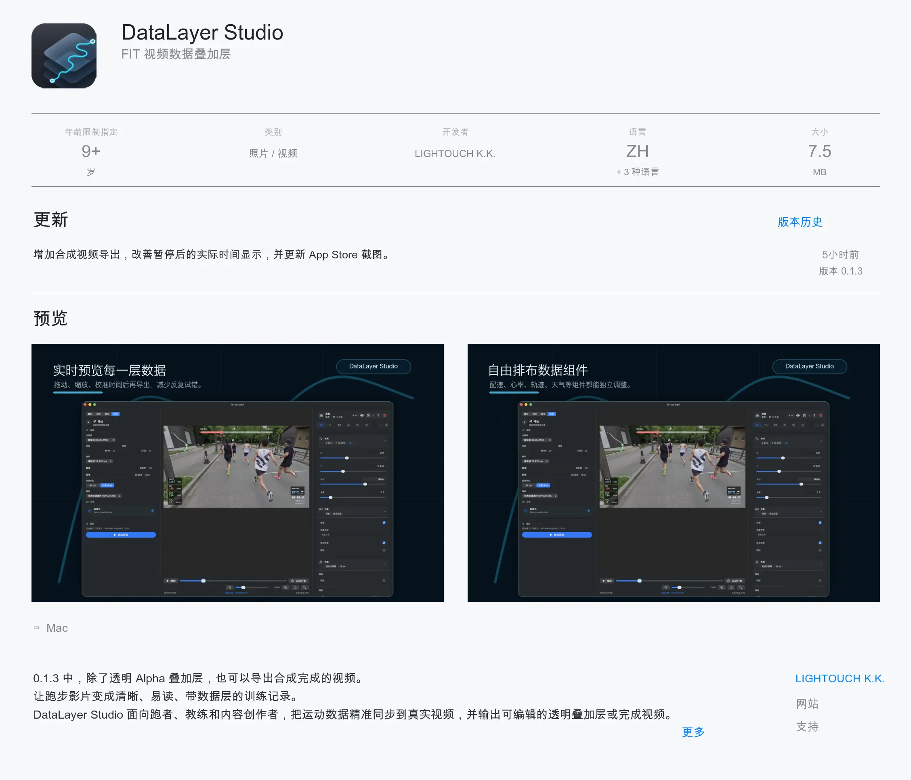

实时预览
播放源视频时同步渲染数据层，拖动和缩放后立即看到结果。

DataLayer Studio导入视频与 FIT/GPX 运动文件，校准时间，拖拽排布组件， 把路线、配速、心率和时间做成有质感的透明 Alpha 浮层。

工作流
把原本分散在运动文件、视频时间线和剪辑软件里的步骤，收束成一条可预览的制作流程。
选择源视频和 FIT/GPX 运动文件，读取分辨率、帧率、GPS 与跑步指标。
用偏移、FIT 开始或同步点对齐运动时间和视频时间。
在画布上拖拽每个 gauge，调整位置、尺寸、字体和颜色。
生成透明 Alpha 浮层，或直接导出已叠加数据层的视频成片。
功能
配速、心率、步频、距离、轨迹、天气、时间日期都能按镜头重新组织。
播放源视频时同步渲染数据层，拖动和缩放后立即看到结果。
调整层级、位置、尺寸、透明度、字体和颜色，保存成可复用预设。
支持 GPS、距离、速度、配速、心率、步频、功率、温度等常见记录字段。
剪辑、移动和对齐多个视频与运动片段，保留每段素材之间的时间关系。

效果展示
路线、距离进度、实时配速、心率和环境信息直接进入画面， 训练故事不再只靠字幕和后期备注解释。



输出
导出带 Alpha 通道的 MOV，保留后期调色、裁剪和节奏控制空间。
把原视频、音频和数据层一起输出，适合快速交付或无需再进剪辑软件的场景。

购买
把运动文件里的时间、路线和指标，变成剪辑时间线里可控、可复用、可交付的一层画面。 DataLayer Studio 在 App Store 购买后即可使用，价格以当前地区商店显示为准。
上线初期的早鸟特惠定价，实际价格以 App Store 当前地区显示为准。
